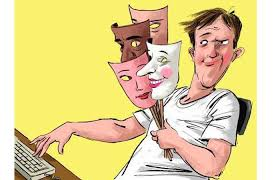
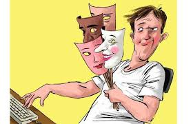

la identidad de genero en las redes sociales
en el ambito digital,las redes sociales se han convertido en un espacio clave para la expresion y construcción de identidades de genero diversas,tanto para individuos como para comunidades.Aunque ofrecen portunidades para la visibilidades y conexcion,tambien pueden exponer a la discriminaion y el ciberacoso.La forma en que se expresan estas identidades y se promueven el respeto varia segun la plataforma y las interacciones individuales.
las redes sociales tiene un doble papel en la construcción de la identidad de genero:son plataformas donde se pueden expresar y construir identidades diversas ,creando comunidades de apoyo y visibilidad para personas trans y LGBTTTTIQ+,pero tambien son un espacio donde proliferan estereotipos de genero ,discurso de odio y ciberacoso,que pueden afectar negativamente la construccion del yo
posibilidades positivas:
espacios de expresion y construcción de identidad:
las redes sociales permiten a las personas explorar y expresar su identidad de genero en un entorno digital,lo que fscilita la construcción del "yo"en linea.
comunidades y redes de apoyo:
facilitan la creaccion de colectivos y comunidades de apoyo,especialmente para personas trans y LGBTTTTIQ+,que pueden compartir sus experiencias,encontrar apoyo y sentirse identidades con otras personas
visibilidad y denuncia:
son herramientas poderosas para visibilizar historias,dificultades en la transicion,y para denuciar situaciones de rechazo, violencia y acoso tanto como fuera de linea
fomento del respeto y la inclusion:
el uso adecuado de las redes sociales pueden ser un vehiculo para promover una cultura de respeto hacia la diversidad de genero,la empatia,y la inclusion,creando un mejor tarto para todos.
riegos y desafios:
estereotipos y roles de genero:
las redes sociales pueden reforzar estereotipos de genero y la vison binaria del genero ,al presentar modelos y contenidos que encasillan a las personas en roles tradicionales y limitantes
influencia de influencers y modelos a seguir:
Los influencers y otros referentes culturalesen redes sociales pueden perpetuar estandares de belleza y roles de genero estereotipos,influyendo en la construccion de la identidad,ya que las personas se enfrentan a una mayor presion para definirse.